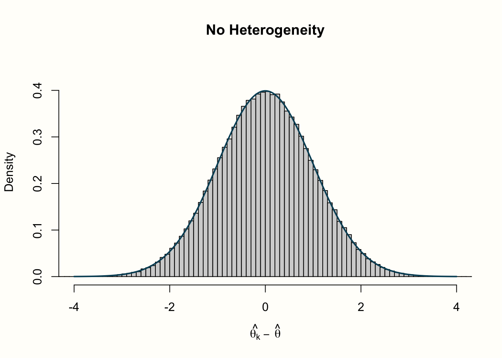
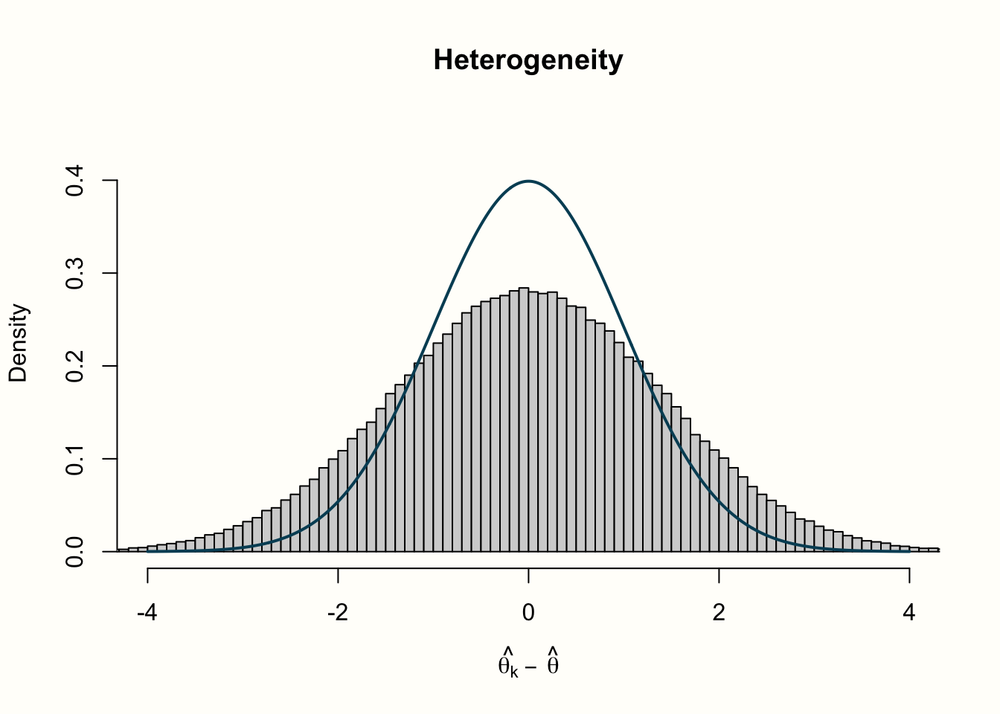
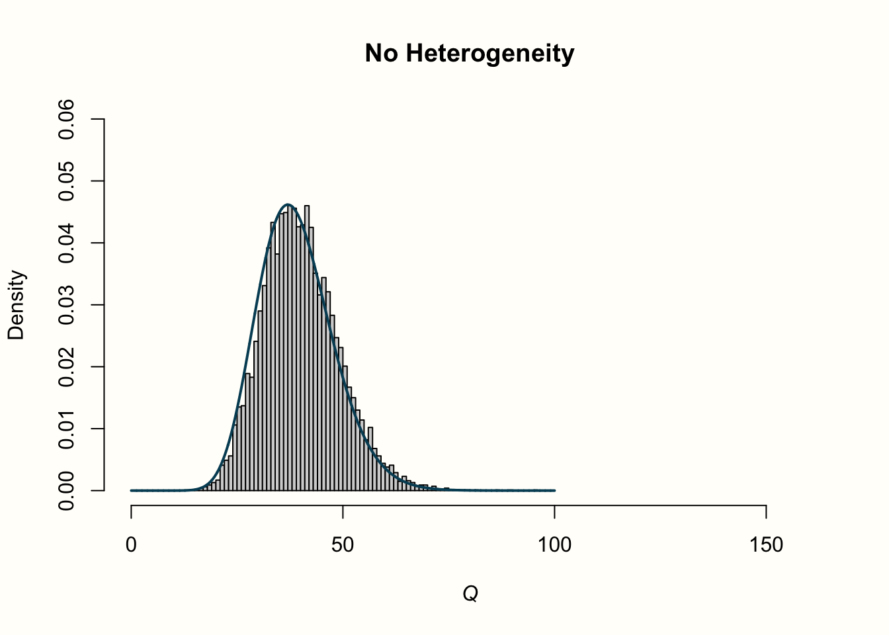
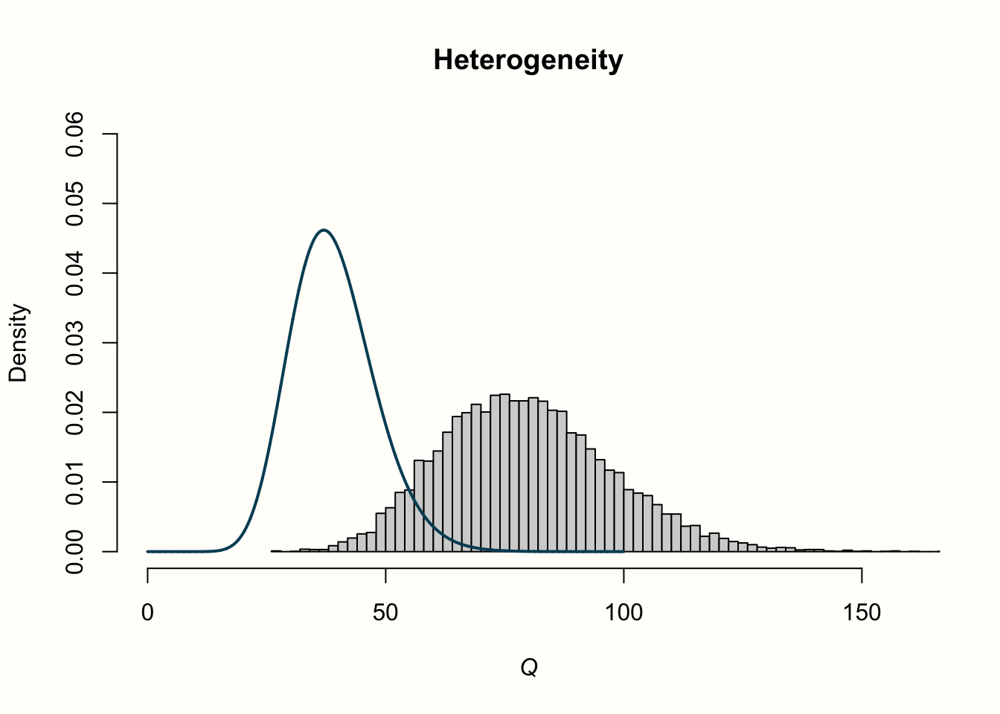

5 研究間異質性
B メタ分析で効果量をプールする方法については、すでに説明してきた。今まで見てきたように、固定効果モデルもランダム化モデルも、多くの異なる研究の効果を1つの数値に統合することが目的である。しかし、これは、りんごとオレンジを比較していない場合にのみ意味がある。例えば、メタ分析で計算した全体的な効果は小さいが、非常に高い効果量を持つ外れ値がいくつか残っているということがあり得る。このような情報は集計された効果からは失われ、すべての研究が小さな効果量をもたらしたのか、それとも例外があったのかはわからない。
メタ分析において、真の効果量がどの程度異なるかを研究間異質性 (between-study heterogeneity) と呼ぶ。この概念については、前章でランダム効果モデルとの関連ですでに簡単に触れた。ランダム効果モデルは、研究間の異質性によって研究の真の効果量が異なることを想定している。そのため、この真の効果の分散を定量化する推定値 \(\tau^2\) を含む。これにより、真の効果量分布の平均値として定義されるプール効果を計算することが可能である。
ランダム効果モデルは、たとえ異質な研究であっても、常にプール効果量を計算することが可能である。しかし、このプール効果が意味のある方法で解釈できるかどうかはわからない。プール効果だけでは、メタ分析におけるデータをうまく表現できないシナリオがたくさんある。
異質性が非常に高く、(例えば、ある治療法の) 真の効果の大きさが正から負までの範囲である場合を想像してみよう。このようなメタ分析のプール効果がプラスであったとしても、真のマイナス効果を持つ研究がいくつかあったということを伝えることができない。その治療法がいくつかの研究で悪影響を及ぼしたという事実は失われてしまう。
異質性が高いということは、研究が、真の効果が異なる2つ以上のサブグループに分けられるという事実によって引き起こされることもある。このような情報は研究者にとって非常に貴重であり、効果が低いまたは高い特定の条件を見つけることができるかもしれない。しかし、プール効果を単独で見ると、このような詳細は見逃される可能性がある。極端な場合、異質性が非常に高いと、研究に共通点がなく、プール効果を解釈することが全く意味をなさなくなる可能性すらある。
したがって、メタ分析では、常に分析した研究のばらつきを考慮しなければならない。優れたメタ分析では、全体的な効果を報告するだけでなく、この推定値がどの程度信頼できるかを明記する必要がある。そのために不可欠なのが、研究間の異質性を定量化し、分析することである。
この章では、異質性を測定するさまざまな方法と、その解釈の仕方を詳しく見ていく。また、データ中の異質性に寄与している研究を検出することができるいくつかのツールについても説明する。最後に、「現実の」メタ分析で異質性が大きい場合の対処について説明する。
5.1 異質性の尺度
異質性の尺度の議論を始める前に、まず異質性の意味は一つではないことを明らかにしておく必要がある。例えば、Rücker ら (2008) は、ベースラインまたはデザイン関連の異質性と、統計的異質性を区別している。
ベースラインまたはデザイン関連異質性は、研究の母集団または研究設計が研究間で異なる場合に生じる。この種の異質性については、「りんごとオレンジ」問題 (Chapter 1.3) や、研究課題の定義方法 (Chapter 1.4.1) について説明したときにも取り上げた。デザインに関連する異質性は、どのような種類の集団やデザインがメタ分析に適格であるかを決定する適切な PICO を設定することによって、a priori に低減させることが可能である。
一方、統計的異質性は、メタ分析に含まれる効果量推定値の広がりや精度によって影響を受ける、定量化可能な特性である。ベースライン異質性は、統計的異質性 (例えば、含まれる集団間で効果が異なる場合) につながる可能性があるが、必ずしもそうである必要はない。また、メタ分析では、含まれる研究自体が事実上同一であっても、高い統計的異質性を示すことがある。このガイド (および他のほとんどのメタ分析のテキスト) では、「研究間の異質性」という用語は、統計的な異質性のみを指す。
5.1.1 Cochran’s \(Q\)
ランダム効果モデルに基づくと、観察された効果が研究ごとに異なる原因となる変動要因は 2 つあることが分かっている。サンプリングエラー \(\epsilon_k\) と、研究間の異質性による誤差 \(\zeta_k\) である (Chapter 4.1.2)。研究間異質性を定量化したいときに困難なこととして、変動のうち、どの程度がサンプリングエラーに起因し、どの程度が真の効果量の違いに起因するのかを識別することである。
伝統的にメタ分析では、研究のサンプル誤差と実際の研究間の異質性を区別するために、Cochran’s \(Q\) (Cochran 1954) を使用している。Cochran’s \(Q\) は、加重二乗和 (weighted sum of squares, WSS)として定義されている。これは、各研究の観察効果 \(\hat\theta_k\) の要約効果 \(\hat\theta\) からの偏差を、研究の分散の逆数 \(w_k\) で重み付けしたものである。
\[\begin{equation} Q = \sum^K_{k=1}w_k(\hat\theta_k-\hat\theta)^2 \tag{5.1} \end{equation}\]
この式を詳しく見てみよう。まず、プール効果量に適用されるのと同じ逆分散加重が使われていることがわかる。この式の平均値 \(\hat\theta\) は、固定効果モデルによるプール効果である。個々の効果が要約効果から逸脱する量である残差は、二乗され (値が常に正になるように)、重み付けされ、そして合計される。その結果の値が Cochran’s \(Q\) である。
\(w_k\) による重み付けのため、\(Q\) の値は、\(\hat\theta_k\) が \(\hat\theta\) からどれだけ乖離しているかだけでなく、研究の精度にも依存する。効果量の標準誤差が非常に小さい (つまり精度が非常に高い) 場合、要約効果からの乖離が小さくても高い重みが与えられ、\(Q\) の値が高くなる。
\(Q\) の値は、データに過剰な変動があるかどうか、つまり、サンプル誤差だけから予想されるよりも多くの変動があるかどうかを確認するために使用することが可能である。もしそうであれば、残りの変動は研究間の異質性に起因すると考えることが可能である。このことをちょっとしたシミュレーションで説明しよう。
このシミュレーションでは、\(Q\) が2つの異なるシナリオの下でどのように振る舞うかを検証したいと思われる: 研究間の異質性がない場合と、異質性がある場合である。まず、異質性がない場合から始めよう。これは、\(\zeta_k=0\) 、残差 \(\hat\theta_k-\hat\theta\) はサンプリング誤差 \(\epsilon_k\) の積のみであることを意味する。ある平均効果量 \(\hat\theta\) からの偏差をシミュレートするために、 rnorm 関数を使用することが可能である (正規分布に従うと仮定した)。それらは \(\hat\theta\) を中心としているので、これらの「残差」の平均はゼロ ( \(\mu\) = 0) であると期待可能である。この例では、母集団の標準偏差が \(\sigma=\) 1 で、標準正規分布になると仮定しよう。
正規分布は通常 \(\mathcal{N}\) で示され、残差は \(\mu=\) 0 と \(\sigma=\) 1 の正規分布から得られることを次のように記号化することが可能である。
\[\begin{equation} \hat\theta_k-\hat\theta \sim \mathcal{N}(0,1) \tag{5.2} \end{equation}\]
これを R で試してみよう。\(K\) = 40 効果量の残差 \(\hat\theta_k-\hat\theta\) を rnorm を使って描画してみる。
## [1] -0.56048 -0.23018 1.55871 0.07051 0.12929
## [6] 1.71506 0.46092 -1.26506 -0.68685 -0.44566
## [...]
標準正規分布が rnorm のデフォルトなので、より単純なコード rnorm(40) を使うこともできる。
さて、この \(n=\) 40 回サンプルを描くという作業を何度も何度も繰り返すというシミュレーションをしてみよう。これは replicate 関数を使って実現可能である。この関数では、rnorm の呼び出しを1万回繰り返すように指示した。その結果得られた値を error_fixed というオブジェクトに保存する。
サンプリングエラー \(\epsilon_k\) に加えて、研究間の異質性 (\(\zeta_k\) 誤差) が存在すると仮定する2番目のシナリオを続ける。これは、真の効果量の分散を表す rnorm の 2 回目の呼び出しを追加することでシミュレートすることが可能である。この例では、真の効果量が標準正規分布に従うと仮定する。
このコードを使って、\(K\) = 40 件の研究に、かなりの研究間異質性を持たせて 1 万回のメタ分析の残差をシミュレートすることが可能である。
異質性ありとなしのメタ分析について、\(\hat\theta_k-\hat\theta\) の残差をシミュレーションしたので、\(Q\) の値についても同じことをしてみよう。 このシミュレーションでは、分散、したがって各研究の重み \(w_k\) が1であると仮定することによって \(Q\) の式を少し単純化し、結果として \(w_k\) が式から脱落するようにすることが可能である。つまり、先ほどの rnorm の呼び出しを使って、結果を二乗して合計し、この処理を1万回繰り返せばよいことになる。
以下はそのコードである。
set.seed(123)
Q_fixed <- replicate(10000, sum(rnorm(40)^2))
Q_random <- replicate(10000, sum((rnorm(40) + rnorm(40))^2))\(Q\) の重要な特性は、\(\chi^2\) の分布に (おおよそ) 従うと仮定されていることである。\(\chi^2\) 分布は、加重二乗和のように、正の値のみを取ることが可能である。これは、その 自由度、つまり d.f. によって定義される。\(\chi^2\) 分布は、小さな d.f. では右に裾が広がっているが、自由度が大きくなると正規分布に近づいていく。同時に、自由度は期待値、つまりそれぞれの \(\chi^2\) 分布の平均値でもある。
\(Q\) が \(K-1\) の自由度を持つ \(\chi^2\) 分布にほぼ従うと仮定する (\(K\) はメタ分析における研究数)。もし、効果量の差がサンプリングエラーによってのみ起きたものである場合。これは、\(K-1\) の自由度を持つ \(\chi^2\) 分布の平均が、サンプリング・エラーだけによって期待できる \(Q\) の値を教えてくれることになる。
この説明は非常に抽象的なので、より具体的にするために、シミュレーションした値の分布を見てみよう。以下のコードでは、効果量「残差」と \(Q\) の値のヒストグラムをプロットするために、 hist 関数を使用している。また、各プロットに理想化された分布を示す線を追加している。
このような分布は、正規分布の場合は dnorm 関数で、\(\chi^2\) の場合は dchisq 関数で生成することが可能である。
# 残差 (theta_k - theta) のヒストグラム
# - error_fixed と error_random 両方の
# シミュレーション値のヒストグラムを作成
# - `lines` を使い、青色で正規分布を追加
hist(error_fixed,
xlab = expression(hat(theta[k])~-~hat(theta)), prob = TRUE,
breaks = 100, ylim = c(0, .45), xlim = c(-4,4),
main = "No Heterogeneity")
lines(seq(-4, 4, 0.01), dnorm(seq(-4, 4, 0.01)),
col = "blue", lwd = 2)
hist(error_random,
xlab = expression(hat(theta[k])~-~hat(theta)), prob = TRUE,
breaks = 100,ylim = c(0, .45), xlim = c(-4,4),
main = "Heterogeneity")
lines(seq(-4, 4, 0.01), dnorm(seq(-4, 4, 0.01)),
col = "blue", lwd = 2)
# Q-values のヒストグラム
# - Q_fixed と Q_random 両方の
# シミュレーション値のヒストグラムを作成
# - `lines` を使い、青色でカイ二乗分布を追加
# まず、自由度 (k-1) を計算
# 注意: k=40 件の研究を毎回のシミュレーションで使用
df <- 40-1
hist(Q_fixed, xlab = expression(italic("Q")), prob = TRUE,
breaks = 100, ylim = c(0, .06),xlim = c(0,160),
main = "No Heterogeneity")
lines(seq(0, 100, 0.01), dchisq(seq(0, 100, 0.01), df = df),
col = "blue", lwd = 2)
hist(Q_random, xlab = expression(italic("Q")), prob = TRUE,
breaks = 100, ylim = c(0, .06), xlim = c(0,160),
main = "Heterogeneity")
lines(seq(0, 100, 0.01), dchisq(seq(0, 100, 0.01), df = df),
col = "blue", lwd = 2)以下は、R で描いたプロットである。

プロット生成に使用したコードがわかりにくいと思われるだろうが、心配はいらない。このシミュレーションのためだけに使用したものであり、実際のメタ分析の一部として作成されるプロットではない。
4 つのヒストグラムにあるものを見ていこう。最初の行は、効果量「残差」の分布で、異質性のあるものとないものがある。異質性のないデータは、私たちがプロットに含めた標準正規分布の線に忠実に沿っていることがわかる。これは、データがこの正確な分布を仮定して rnorm によって生成されたので、非常に論理的である。しかし、異質性を追加したデータは、標準正規分布に従いない。データの分散はより大きくなり、より重い尾を持つ分布になる。
さて、これが2行目の \(Q\) の値の分布とどう関係しているのかを探ってみよう。異質性がない場合、\(Q\) 値は、特徴的な右に歪んだ \(\chi^2\) 分布に従っている。プロットでは、実線は自由度 39 の \(\chi^2\) 分布の形状を示している (各シミュレーションで使われたのは、d.f. = \(K-1\) および \(K\) = 40 であるため)。シミュレーションされたデータはこの曲線にかなりよく従っていることがわかる。これは大きな驚きではない。私たちは、異質性がないとき、\(Q\) が \(K-1\) の自由度を持つ \(\chi^2\) 分布に従うことを知っている。このシミュレーションデータもまさにこのケースである。バラツキはサンプル誤差によってのみ存在したのである。
異質性のある例では、分布は全く異なるように見える。シミュレーションされたデータは、期待された分布に全く従っていないように見える。値は目に見えて右にシフトしており、分布の平均は約 2 倍高くなっている。研究間にかなりの異質性がある場合、\(Q\) 値は、異質性がないという仮定で期待される \(K-1\) の値よりもかなり高くなると結論づけることが可能である。これは、研究間の異質性の存在をシミュレートするために、データに余分な変動を加えたので、驚くことではない。
これはやや長い説明であったが、それでも、\(Q\) の統計的特性をどのように利用できるかをより理解するのに役立っただろう。 Cochran’s \(Q\) は、メタ分析における変動が、異質性がないという帰無仮説の下で期待する量を著しく超えているかどうかを検定するのに利用可能である。
この異質性の検定はメタ分析でよく使われるもので、Chapter 4 に戻ると、{meta} もデフォルトで提供してくれていることがわかる。これはよく Cochran’s \(Q\) test と呼ばれるが、実はこれは誤記である。Cochran自身は \(Q\) をこのように使うことを意図してはいないかった (Hoaglin 2016)。
Cochran’s \(Q\) は、非常に重要な統計量である。これは、Higgins and Thompsonの \(I^2\) 統計量や \(H^2\) など、異質性を定量化する他の一般的な方法がこれに基づいていることが主な理由である。これらの尺度については、次のセクションで説明した。Cochran’s \(Q\) は、\(\tau^2\) を計算する異質性分散推定でも使われている。最も有名なのは DerSimonian-Laird 推定量である27。
\(Q\) の課題と \(Q\)-検定
\(Q\) はメタアナリシスでよく使われ報告されているが、欠点がいくつかある。例えば Hoaglin (2016) は、\(Q\) が自由度 \(K-1\) の \(\chi^2\) 分布に従うという仮定はメタ分析における \(Q\) の実際の振る舞いを反映しておらず、したがって DerSimonian-Laird 法などにはバイアスがあるかもしれないと論じている。
より現実的な問題として、\(Q\) は研究の数 \(K\) と精度 (すなわち研究のサンプルサイズ) が増加したときの両方で増加する。したがって、\(Q\) とそれが有意であるかどうかは、メタアナリシスの規模、ひいてはその統計的検出力に大きく依存することになる。
このことから、異質性を評価する際には、\(Q\)-検定の有意性だけに頼るべきではないことがわかる。メタアナリシスでは、\(Q\)-検定の有意性に基づいて固定効果モデルかランダム効果モデルのどちらを適用するかを決めることがある。ここで述べた理由から、このアプローチは全く推奨されない。
5.1.2 Higgins & Thompson’s \(I^2\) 統計量
\(I^2\) 統計量 (J. P. Higgins and Thompson 2002) は、研究間の異質性を定量化する別の方法で、Cochran’s \(Q\) に直接基づいている。これは、サンプリングエラーによって引き起こされない効果量の変動の割合と定義されている。\(I^2\) は、異質性がないという帰無仮説のもと、自由度 \(K-1\) を持つ \(\chi^2\) 分布に従っているという前提に基づいて作成されている。これは、異質性がない場合 (すなわち、 \(K-1\)) のとき、\(Q\) 観察値が 期待された \(Q\) 値をどの程度超えているかをパーセントで定量化するものである。
\(I^2\) の計算式は次のようになる。
\[\begin{equation} I^2 = \frac{Q-(K-1)}{Q} \tag{5.3} \end{equation}\]
ここで、\(K\) は研究の総数である。 \(I^2\) の値は 0% より低くすることはできないので、\(Q\) が \(K-1\) より小さい場合は、負の値ではなく、単に \(0\) とする28。
\(I^2\) がどのように計算されるかを説明するために、先ほどの \(Q\) のシミュレーション値を使用しよう。まず、異質性がないと仮定した Q_fixed の 10 番目のシミュレーション値を選ぶ。そして、上の式を使って、\(I^2\) を計算する。
# 10 回目の Q のシミュレーションを表示
Q_fixed[10]## [1] 35.85787
# k を定義
k <- 40
# I^2 を計算
(Q_fixed[10] - (k-1))/Q_fixed[10]## [1] -0.08762746結果がマイナスなので、ゼロに切り上げると、\(I^2\) = 0% となる。この値は、効果量のばらつきの 0% が研究間の異質性に起因していることを示している。これは、シミュレーションに使用した設定と一致している。
今度は、Q_random の 10 番目のシミュレート値で同じことをしよう。
(Q_random[10] - (k-1))/Q_random[10]## [1] 0.5692061このシミュレーションの \(I^2\) 値は約 50% で、変動の約半分が研究間異質性に起因していることがわかる。この例の変動は、サンプル誤差と研究間異質性のシミュレーションに等しく基づいているので、これも私たちの予想に沿ったものである。
メタ分析における研究間異質性を報告するために \(I^2\) 統計量を使用することは一般的であり、\(I^2\) は {meta} から得られる出力にデフォルトで含まれている。この統計量の人気は、この統計量をどう解釈するかの「経験則」が存在することと関連しているだろう (J. P. Higgins and Thompson 2002)。
\(I^2\) = 25%: 低い異質性
\(I^2\) = 50%: 中程度の異質性
\(I^2\) = 75%: 実質的な異質性を有する。
5.1.3 \(H^2\) 統計量
\(H^2\) 統計量 (J. P. Higgins and Thompson 2002) も Cochran’s \(Q\) から派生したもので、\(I^2\) に似ている。これは、\(Q\) で測定される観測された変動と、サンプル誤差による期待分散の比を記述するものである。
\[\begin{equation} H^2 = \frac{Q}{K-1} \tag{5.4} \end{equation}\]
\(Q\) が \(K-1\) より小さい場合、その値を人為的に修正する必要がないため、\(H^2\) の計算は \(I^2\) の計算よりわずかにエレガントである。研究間の異質性がない場合、\(H^2\) は 1 (またはそれ以下) に相当する。1 より大きい値は、研究間の異質性があることを示す。
\(I^2\) と比較すると、発表されたメタ分析でこの統計量が報告されることは、はるかに少ない。しかし、\(H^2\) は {meta} のメタ分析関数の出力にデフォルトで含まれている。
5.1.4 異質性分散 \(\tau^2\) と標準偏差 \(\tau\)
異質性分散 \(\tau^2\) については、すでに Chapter 4.1.2 で詳しく説明してきた。そこで述べたように、\(\tau^2\) は、私たちのデータの基礎となる真の効果量の分散を定量化するものである。\(\tau^2\) の平方根をとると、\(\tau\) が得られ、これは真の効果の大きさの標準偏差である。
\(\tau\) の大きな特徴は、効果量と同じ尺度で表現されていることである。これは、たとえば、一次調査におけるサンプルの年齢の平均と標準偏差を解釈するのと同じように、これを解釈できることを意味した。\(\tau\) の値は、真の効果量の範囲について何かを教えてくれる。
例えば、\(\tau\) に 1.96 を掛け、プール効果量にこの値を加減することで、真の効果量の95%信頼区間を計算することが可能である。Chapter 4.2.1 で計算した m.gen メタ分析を使って、これを試してみることが可能である。
このメタ分析におけるプール効果と \(\tau\) 推定値がどのようなものであったか、もう一度見てみよう。
# 効果プール
m.gen$TE.random## [1] 0.5771158
# tau 推定
m.gen$tau## [1] 0.2863311\(g=\) 0.58、\(\tau=\) 0.29であることがわかる。このデータに基づいて、95%真の効果量の信頼区間の下限と上限を計算することが可能である。0.58 \(-\) 1.96 \(\times\) 0.29 = 0.01 と 0.58 \(+\) 1.96 \(\times\) 0.29 = 1.15。
「不確かさの不確かさは？」: \(\tau^2\) の信頼区間の計算
研究間異質性分散推定値の不確実性 (すなわち、\(\tau^2\) 付近の信頼区間) を定量化する方法は、現在も検討されている分野である。いくつかのアプローチが考えられるが、その妥当性は \(\tau^2\) 推定量の種類に依存する (Chapter 4.1.2.1)。
{meta} パッケージは Veronikki (2016)の推奨に従い、ほとんどの推定量に対して \(Q\)-Profile 法 (Viechtbauer 2007b) を使用する。
\(Q\)-Profile 法は、\(Q\) の改良版である一般化 \(Q\)-統計量 \(Q_{\text{gen}}\)を用いた手法である．標準版の\(Q\)が固定効果モデルに基づくプール効果を用いるのに対し，\(Q_{\text{gen}}\) はランダム効果モデルに基づいている。ランダム効果モデルによる全体効果である \(\hat\mu\) とランダム効果モデルに基づく重みを用いて偏差を計算する。
\[\begin{equation} Q_{\text{gen}} = \sum_{k=1}^{K} w^*_k (\hat\theta_k-\hat\mu)^2 \tag{5.5} \end{equation}\]
ここで、\(w^*_k\) はランダム効果重み ( Chapter 4.1.2.1 を参照) である。
\[\begin{equation} w^*_k = \frac{1}{s^2_k+\tau^2} \tag{5.6} \end{equation}\]
また、\(Q_{\text{gen}}\) は自由度 \(K-1\) の \(\chi^2\) 分布に従うことが示されている。一般化 \(Q\) 統計量は \(\tau^2)\) の値が大きいか小さいかで異なる値の \(Q_{\text{gen}}\) を返す関数 \(Q_{\text{gen}}(\tau^2)\) と考えることができる。この関数の結果は、\(\chi^2\) 分布となる。
この \(\chi^2\) 分布は明確に予測できるパターンに従っているので、例えば 95% カバーする信頼区間を簡単に求めることができる。その自由度 \(K-1\) に基づいて、2.5 と97.5 パーセンタイルの \(\chi^2\) の値を求めればよい。 R では、これは分位数関数 qchisq を使用して簡単に行うことができる。例えば qchisq(0.975, df=5) とする。
\(Q\)-Profile 法は、この関係を利用して、\(\tau^2\) 付近の信頼区間を繰り返し計算する手法である(いわゆる「プロファイリング」)。この方法では、\(Q_{\text{gen}}(\widetilde{\tau}^2)\) の値を増加させながら、\(\chi^2\) 分布に基づく信頼区間の下限と上限の期待値に到達するまで繰り返し計算する。
\(Q\)-Profile 法は、{meta} 関数の中で method.tau.ci = "QP" という引数で指定することができる。これはデフォルトの設定であり、この引数を手動で追加する必要はない。唯一の例外は、DerSimonian-Laird 推定法 (method.tau = "DL") を使用した場合である。この場合，自動的に Jackson (2013) による別の手法が使用される (手動で method.tau.ci = "J" と指定することで可能)。
通常、{meta} のデフォルトの動作から外れる必要はないが、メタアナリシスにおいて、どの方法で \(\tau^2\) の信頼区間を計算したかを報告することは、他の人にとって有益な場合がある。
5.2 どの方法を使うべきか？
メタアナリシスで異質性を評価・報告する場合、統計的検出力の影響をあまり受けず、かつ頑健な指標が必要です。コクランの \(Q\) は、研究の数が増えれば増えるほど、また精度 (すなわち研究のサンプルサイズ) が上がれば上がる。
つまり、\(Q\) とそれが有意であるかどうかは、メタアナリシスの規模、その統計的検出力に大きく依存することになる。したがって、研究間の異質性を評価する際には、\(Q\)、特に \(Q\)-検定だけに頼るべきではない。
一方、\(I^2\) は、分析対象の研究数の変化に対して敏感ではない。解釈も比較的簡単で、多くの研究者がその意味を理解している。一般的に、メタアナリシス報告書に異質性の指標として \(I^2\) を含めることは悪い考えではない。特に、この統計量の信頼区間を示すことで、他の人が推定値の正確さを評価することができるようになる。
しかし、文献上ではよく使われているが、\(I^2\) も異質性を測る完璧な指標ではない。異質性の絶対的な尺度ではなく、その値はやはり含まれる研究の精度に大きく依存する (Borenstein et al. 2017; Rücker et al. 2008)。上で述べたように、\(I^2\) は単純にサンプリングエラー \(\epsilon\) によって引き起こされない変動の割合である。研究がどんどん大きくなれば、サンプリングエラーはゼロになる傾向があり、同時に \(I^2\) は100%になる傾向がある。ただし、これは単に研究のサンプルサイズが大きくなったからである。
したがって、\(I^2\) にだけ頼るのは良い選択肢とは言えない。\(H^2\) は \(I^2\) と似たような挙動をするので、この統計量にも同じ注意点がある。
一方、\(\tau^2\) と \(\tau\) の値は、研究数とその精度に依存しない。研究数や研究規模が大きくなっても系統的に増加することはない。しかし、\(\tau^2\) が実用上どの程度の意味を持つのか、解釈しにくいことがある。例えば、ある研究で真の効果量の分散が \(\tau^2=\) 0.08 であることが分かったとする。この分散が意味のあるものなのか、そうでないものなのかを判断するのは、自分自身にとっても、他の人にとっても、難しい場合がある。
予測区間 (Prediction intervals, PIs) は、この限界を克服する良い方法である (IntHout et al. 2016)。予測区間は、現在の証拠に基づき、将来の研究の効果がどの範囲に収まると予想できるかを示している。
予測区間が完全に介入に有利な「正」側にあるとする。これは、効果はさまざまであっても、我々が調査した文脈全体では、介入は将来有益であると期待されることを意味する。予測区間にゼロが含まれる場合、これについてはあまり確信が持てないが、広い予測区間はかなり一般的であることに注意する必要がある。
全体効果の予測区間 \(\hat\mu\) を計算するために、推定された研究間異質性分散 \(\hat\tau^2\) とプール効果の標準誤差 \(SE_{\hat\mu}\) の両方を使用する。標準誤差の二乗と \(\hat\tau^2\) の値を合計し、その平方根をとる。これによって、予測区間の標準偏差 \(SD_{\text{PI}}\) が得られる。予測範囲は自由度\(K-1\)の\(t\)分布を仮定しているので、\(SD_{\text{PI}}\) に \(t_{K-1}\) の97.5値を掛け、その結果を \(\hat\mu\) に加算・減算することになる。これは、プールされた効果の95%予測区間を与える。
95%予測区間の計算式は次のようになる。
\[\begin{align} \hat\mu &\pm t_{K-1, 0.975}\sqrt{SE_{\hat\mu}^2+\hat\tau^2} \notag \\ \hat\mu &\pm t_{K-1, 0.975}SD_{\text{PI}} \tag{5.7} \end{align}\]
{meta} の関数はすべて、プール効果に対する予測区間を提供することができるが、デフォルトではない。メタ分析を実行する際には、予測区間が出力されるように prediction = TRUE という引数を追加する必要がある。
まとめると、メタ分析の異質性を特徴付ける際に、一つの指標だけに頼らないことが望ましいということである。少なくとも、常に \(I^2\) (信頼区間付き) と予測区間を報告し、それに従って結果を解釈することが推奨される。
5.3 R での異質性評価
異質性指標について学んだことを、実際にどのように使うことができるかを見てみよう。例として、これまで使ってきた m.gen メタ分析オブジェクトの異質性をもう少し詳しく調べてみよう (このオブジェクトは Chapter 4.2.1 で生成した)。
metagen オブジェクトのデフォルトの出力には予測区間が含まれていないため、まずこれを更新する必要がある。単純に update.meta 関数を使用し、prediction の区間を追加で出力するように指示する。
m.gen <- update.meta(m.gen, prediction = TRUE)これで、結果を再確認することができる。
summary(m.gen)## Review: Third Wave Psychotherapies
##
## [...]
##
## Number of studies combined: k = 18
##
## SMD 95%-CI t p-value
## Random effects model 0.5771 [ 0.3782; 0.7760] 6.12 < 0.0001
## Prediction interval [-0.0572; 1.2115]
##
## Quantifying heterogeneity:
## tau^2 = 0.0820 [0.0295; 0.3533]; tau = 0.2863 [0.1717; 0.5944];
## I^2 = 62.6% [37.9%; 77.5%]; H = 1.64 [1.27; 2.11]
##
## Test of heterogeneity:
## Q d.f. p-value
## 45.50 17 0.0002
##
## Details on meta-analytical method:
## - Inverse variance method
## - Restricted maximum-likelihood estimator for tau^2
## - Q-profile method for confidence interval of tau^2 and tau
## - Hartung-Knapp adjustment for random effects model (df = 17)
## - Prediction interval based on t-distribution (df = 16)この出力では、前に定義したすべての異質性測定の結果が表示される。まず、Quantifying heterogeneity のセクションから始めよう。ここで、\(\tau^2=\) 0.08であることがわかる。\(\tau^2\) (0.03 - 0.35)の信頼区間はゼロを含まず、私たちのデータに何らかの研究間異質性が存在することを示している。 \(\tau\) の値は 0.29 である。これは、真の効果量が、効果量の尺度 (ここでは、Hedges’ \(g\)) で表される、\(SD=\) 0.29 の推定標準偏差を有することを意味する。
2 行目を見ると、\(I^2=\) 63%、\(H\) (\(H^2\) の平方根) は 1.64 であることがわかる。これは、データにおける変動の半分以上が、真の効果量の差から生じていると推定されることを意味している。Higgins and Thompson の「経験則」を用いると、この異質性の量は中程度から大きいと特徴づけることが可能である。
プール効果の直下に、予測区間が表示されている。これは、\(g=\) -0.06 から 1.21 までの範囲である。これは、現在のエビデンスに基づいて、将来のいくつかの研究が負の治療効果を発見する可能性があることを意味する。しかし、この区間はかなり広く、非常に高い効果も可能であることを意味する。
最後に、\(Q\) と Test of heterogeneity も提示されている。 \(Q\) = 45.5 であることがわかる。これは、この分析の \(K-1=\) 17 の自由度に基づいて期待されるものよりずっと多いものである。その結果、異質性検定は有意である (\(p<\) 0.001)。しかし、前に述べたように、\(Q\) の欠陥が知られている以上、 この検定だけに基づいて評価を行うべきではない。
メタアナリシスにおける異質性量の報告
この例における異質性の量をどのように報告する文章を例示する。
“The between-study heterogeneity variance was estimated at \(\hat\tau^2\) = 0.08 (95%CI: 0.03-0.35), with an \(I^2\) value of 63% (95%CI: 38-78%). The prediction interval ranged from \(g\) = -0.06 to 1.21, indicating that negative intervention effects cannot be ruled out for future studies.”
では、これらの結果から何がわかるのだろうか。全体として、ここで示している指標は、中程度からかなりの異質性がデータに存在することを教えてくれる。このメタ分析における効果は完全な異質という訳ではないが、研究間の真の効果量には明らかに何らかの差がある。
したがって、この異質性の原因を探るのは良いアイデアだろう。効果量が大きく、実際には「当てはまらない」研究が 1 つまたは 2 つある可能性がある。これは、この分析における異質性を増大させ、さらに悪いことには、真の効果の過大評価につながった可能性がある。
一方、プールされた効果は、サンプルサイズが非常に大きい 1 つの研究が予想外に小さい効果量を報告したことに大きく影響されている可能性もある。これは、プール効果が治療の真の効果を過小評価していることを意味する可能性がある。
これらの懸念に対処するため、次に、プールした結果の頑健性を評価するための手続きを説明する。外れ値分析と影響度分析である。
\(I^2\) > 50% “Guideline”
研究間の異質性について、具体的にいつさらなる解析が必要かを決める鉄則はない。実際に使われることもあるアプローチは、\(I^2\) が 50% より大きいときに外れ値や影響力のあるケースをチェックすることである。この閾値に達すると、少なくとも中程度の異質性があり、変動の (半分以上が) 真の効果量の差に起因していると仮定することができる。
この「経験則」は、やや恣意的なものであり、これまで述べてきた \(I^2\) の問題を考えると、決して完全なものではない。しかし、メタ分析でプールされた効果のよりロバストなバージョンを得ようとするときに、a priori に一貫した方法で指定することができるので、実用的な観点から役に立つ。
避けなければならないのは、結果が気に入ったからと言って、厳密な根拠もなく、外れ値や影響力のあるケースを削除することである。そのような結果は、たとえ意識的に「好ましい」方向に結果を曲げようとしなかったとしても、「研究者の意図」 (Chapter 1.3 参照) によって大きバイアスになってしまう。5.4 外れ値と影響力のある事例
前述したように、研究間の異質性は、効果量が極端に大きい 1 つまたは複数の研究によって引き起こされることがあり、それは全く「適合」しない。これはプールされた効果の推定値を歪める可能性があるため、そのような外れ値を分析から取り除いた後にプールされた効果を再検査することは良い考えである。
一方、私たちは、私たちが見つけたプール効果推定値が頑健であるかどうか、つまり、一つの研究に大きく依存しないかどうかも知りたいと思われる。したがって、私たちの分析の効果を一方向に大きく押し上げるような研究があるかどうかも知りたいのである。このような研究は、影響力のあるケースと呼ばれており、この章の後半でこのトピックに時間を割くことにしよう。
5.4.1 基本的な外れ値除去
ある研究の効果を「外れ値」と定義するには、いくつかの方法がある (Viechtbauer and Cheung 2010)。簡単で、やや「強引な」アプローチは、研究の信頼区間がプール効果の信頼区間と重ならない場合、その研究を外れ値とみなすことである。外れ値の効果量は、全体の効果量と著しく異なるほど極端である。このような外れ値を検出するために、すべての研究を検索することが可能である。
95% 信頼区間の上限がプール効果信頼区間の下限より低いもの (すなわち、極端に小さい効果)。
95% 信頼区間の下限がプール効果信頼区間の上限より高いもの (すなわち、極めて大きい効果)。
この方法の背景にある考え方は非常に単純である。サンプル誤差が大きい研究は、プール効果からかなり乖離することが予想される。しかし、そのような研究の信頼区間も大きくなるので、信頼区間がプールされた効果の信頼区間と重なる可能性が高くなる。
しかし、ある研究が低い標準誤差を持ち、それでも (予想外に) プール効果から大きく逸脱している場合、信頼区間が重ならず、その研究は外れ値として分類される可能性が高い。
{dmetar} パッケージには find.outliers という関数があり、この単純な外れ値除去アルゴリズムが実装されている。これは、{meta} オブジェクトから外れ値のある研究を検索し、これらを削除して、結果を再計算する。
find.outliers 関数は、{meta} メタ分析関数によって生成されたオブジェクトを入力として必要とするだけである。それでは、m.gen オブジェクトに対してどのような結果が得られるか見てみよう。
find.outliers(m.gen)## Identified outliers (random-effects model)
## ------------------------------------------
## "DanitzOrsillo", "Shapiro et al."
##
## Results with outliers removed
## -----------------------------
## Number of studies combined: k = 16
##
## SMD 95%-CI t p-value
## Random effects model 0.4528 [0.3257; 0.5800] 7.59 < 0.0001
## Prediction interval [0.1693; 0.7363]
##
## Quantifying heterogeneity:
## tau^2 = 0.0139 [0.0000; 0.1032]; tau = 0.1180 [0.0000; 0.3213];
## I^2 = 24.8% [0.0%; 58.7%]; H = 1.15 [1.00; 1.56]
##
## Test of heterogeneity:
## Q d.f. p-value
## 19.95 15 0.1739
##
## [...]find.outliers 関数が、“DanitzOrsillo” と “Shapiro et al.” という2つの外れ値を検出したことがわかる。また、この関数は、検出された研究を除外しながら、自動的に分析を再実行してきた。各研究のランダム効果重みを表示す列、%W(random) では、外れ値の研究の重みが0に設定され、分析から除外されていることがわかる。
出力に基づき、2つの研究が除外されると、\(I^2\) 異質性がかなり縮小し、\(I^2=\) 63% から 25% になることがわかる。 \(\tau^2\) の信頼区間はゼロを含み、\(Q\) -異質性の検定は有意ではなくなる。その結果、私たちの推定値の予測区間も狭くなっている。今、それは正の値だけを含み、将来の研究にわたるプールされた効果の頑健性をより確実なものにしている。
5.4.2 影響力分析
ここまでで、メタ分析における外れ値の検出と除去の基本的な方法を学んできた。しかし、プール効果の頑健性について懸念を引き起こすのは、極端な効果量だけではない。効果量が特に大きくなくても小さくても、全体の結果に非常に大きな影響力を及ぼす研究もある。
例えば、メタ分析で全体的な効果を発見しても、その有意性は1つの大きな研究に依存している可能性がある。これは、影響力のある研究を取り除くと、プールされた効果が統計的に有意でなくなることを意味している。このような情報は、私たちの結果がいかに頑健であるかを一般に伝えるために非常に重要である。
外れ値の研究と影響力のある研究とは、重複している部分もあるが、若干意味が異なる。外れ値は効果の大きさによって定義されるが、必ずしもメタ分析の結果に大きな影響を与える必要はない。外れ値を削除しても、平均効果量やデータの異質性が大きく変化しないことは十分にあり得る。
一方、影響力のある事例とは、効果の高低にかかわらず、定義上、プール効果や異質性に大きな影響を与える研究のことを指す。もちろん、効果量が極端に大きい研究が影響力のあるケースになりえないということではない。実際、前章の例で説明したように、外れ値も影響力があることが多い。しかし、必ずしもそうなる訳ではない。
影響力のある研究を特定するテクニックはいくつかあり、前回説明した基本的な外れ値除去よりも少し高度なものである。これらは leave-one-out 法に基づいている。このアプローチでは、メタ分析の結果を \(K\) 回再計算し、毎回一つの研究を除外 (leave out) する。
このデータに基づいて、さまざまな影響力診断 (Influence Diagnosis) を計算することができる。影響力診断は、メタ分析の全体推定値に最も影響を与える研究を検出し、この大きな影響力がプール効果を歪めていないかどうかを評価することが可能である (Viechtbauer and Cheung 2010)。
{dmetar} パッケージには InfluenceAnalysis という関数が含まれており、1つの関数でこれらの様々な影響力診断を計算することが可能である。この関数は、{meta} 関数で作成されたあらゆるタイプのメタ分析オブジェクトに使用することが可能である。
InfluenceAnalysis 関数の使用方法は比較的簡単である。影響度分析を行いたいメタ分析オブジェクトの名前を指定するだけである。ここでは、再び m.gen オブジェクトを使用しよう。
InfluenceAnalysis はデフォルトで固定効果モデルを使用するので、random = TRUE を設定して、ランダム効果モデルが使用されるようにする必要がある。この関数は他の引数も取ることができ、主に関数が生成するプロットの種類を制御する。引数については、関数のドキュメントで詳しく説明されている。
関数の結果を m.gen.inf というオブジェクトに保存する。
m.gen.inf <- InfluenceAnalysis(m.gen, random = TRUE)InfluenceAnalysis 関数は、Baujatプロット、Viechtbauer and Cheung (2010) による影響力診断、効果量と \(I^2\) 値でソートされた leave-one out メタ分析結果という4つの影響診断プロットを作成する。これらのプロットはそれぞれ plot 関数で個別に開くことが可能である。それでは、順を追って見ていこう。
5.4.2.1 Baujat プロット
Baujat プロットは plot 関数を用いて、第2引数に "baujat" を指定することで表示できる。
plot(m.gen.inf, "baujat")Baujat plots (Baujat et al. 2002) は、メタ分析における異質性に過度に寄与している研究を検出するための診断プロットである。横軸に全体の異質性 (Cochran’s \(Q\) で測定) に対する各研究の寄与を、縦軸にプール効果量に対するその影響を示している。
この「影響力」の値は、leave-one-out 法により決定され、その研究がメタ分析に含まれる場合と含まれない場合の全体効果の標準化された差を表している。
プロットの右側にある研究は、私たちのメタ分析における全体的な異質性に大きく寄与しているので、潜在的に関連するケースと見なすことが可能である。プロットの右上にある研究は、推定された異質性とプールされた効果の両方に大きな影響を与えるので、特に影響力があると思われる。
プロットの右側にある2つの研究は、以前すでに検出したものである (“DanitzOrsillo” と “Shapiro et al.”)。この二つの研究は全体の結果に大きな影響を与えないが (サンプルサイズが小さいためと思われる)、メタ分析で見られる異質性に大きな影響を及ぼしている。
5.4.2.2 影響力診断
次のプロットは、各研究のいくつかの影響力診断 (Influence Diagnostics) を含んでいる。これらは、このコードを使ってプロットすることが可能である。
plot(m.gen.inf, "influence")このプロットは、各研究について、さまざまな影響力の値を表示していることがわかる。これらの尺度は、どの研究がメタ分析モデルにうまく適合して、どの研究が適合しないかを特徴づけるために使用される。診断の意味を理解するために、左から右、上から下へと簡単に見ていこう。
5.4.2.2.1 外部標準化残差
最初のプロットは、各研究の外部標準化残差を表示している。名前にあるように、残差は、観察された各効果量 \(\hat\theta_k\) のプール効果量からの偏差を表している。残差は標準化されており、偏差を計算するために、研究を含まないプールされた効果の「外部」推定値を使用する。
「外部」プール効果 \(\hat\mu_{\setminus k}\) は、leave-one-out 法の原則に従って、研究 \(k\) を除いた全体効果を計算することによって得られる。そして、得られた残差は、(1) 外部効果の分散 (すなわち、\(\hat\mu_{\setminus k}\) の標準誤差の2乗)、(2) 外部プール効果の推定値 \(\tau^2\)、および (3) \(k\) の分散によって標準化される。
\[\begin{equation} t_{k} = \frac{\hat\theta_{k}-\hat\mu_{\setminus k}}{\sqrt{\mathrm{Var}(\hat\mu_{\setminus k})+\hat\tau^2_{\setminus k}+s^2_k}} \tag{5.8} \end{equation}\]
研究 \(k\) がメタ分析にうまく適合すると仮定すると、分母の3つの項は、効果量が平均効果量からどれくらい異なるかを決定する変動源を捕捉した。これらの変動要因は、\(k\) のサンプルエラー、真の効果量の分散、およびプール効果量の推定値の不正確さである。
もし研究が全体の母集団に合わないならば、残差は3つの分散項だけから予想されるよりも大きくなると仮定可能である。これは、\(t_k\) の値を高くし、その研究が「適合しない」影響力のあるケースであることを示している。
5.4.2.2.2 \(\mathrm{DFFITS}\) 値
\(\mathrm{DFFITS}\) 量の計算は、外部標準化残差の計算と同様である。したがって、DFFITSと \(t_k\) の値のパターンは、多くの場合、研究間で比較可能である。これが計算式である。
\[\begin{equation} \mathrm{DFFITS}_k = \dfrac{\hat\mu-\hat\mu_{\setminus k}}{\sqrt{\dfrac{w_k^{(*)}}{\sum^{K}_{k=1}w_k^{(*)}}(s^2_k+\hat\tau^2_{\setminus k})}} \end{equation}\]
計算には、研究 \(k\) ( Chapter 4.1.1 ) の (ランダム効果) 重みである \(w_k^{(*)}\) も必要で、これを重みの合計で割って研究の重みをパーセントで表現することになる。
一般に、\(\mathrm{DFFITS}\) の値は、ある研究 ( \(k\) ) を削除したときに、プールされた効果がどの程度変化するかを示し、標準偏差で表される。ここでも、値が高いほど、平均効果への影響が大きいので、その研究が影響力のあるケースである可能性を示している。
5.4.2.2.3 Cook 距離
ある研究の Cook 距離 \(D_k\) は、\(\mathrm{DFFITS}\) の値と非常によく似た式で計算できる。最大の違いは、\(D_k\) の場合、\(k\) の有無によるプール効果の差は2乗になることである。
この結果、\(D_k\) は正の値のみをとることになる。しかし、研究間のパターンは、\(\mathrm{DFFITS}\) の値と似ていることが多い。以下は式である。
\[\begin{equation} D_k = \frac{(\hat\mu-\hat\mu_{\setminus k})^2}{\sqrt{s^2_k+\hat\tau^2}}. \tag{5.9} \end{equation}\]
5.4.2.2.4 共分散比
研究 \(k\) の共分散比は、\(k\) のないプール効果の分散 (すなわち、その二乗標準誤差) を初期平均効果の分散で割ることによって算出することが可能である。
\[\begin{equation} \mathrm{CovRatio}_k = \frac{\mathrm{Var}(\hat\mu_{\setminus k})}{\mathrm{Var}(\hat\mu)} \tag{5.10} \end{equation}\]
\(\mathrm{CovRatio}_k\) が 1 以下の値は、研究 \(k\) を削除することで、プール効果量 \(\hat\mu\) のより正確な推定値が得られることを示す。
5.4.2.2.5 Leave-One-Out \(\tau^2\) 値と \(Q\) 値
この行の値は非常に簡単に解釈可能である。これらは単に、\(\tau^2\) と Cochran’s \(Q\)、研究 \(k\) を削除した場合に測定される推定異質性を表示しているだけである。 \(Q\) 値と \(\tau^2\) 値、特に後者の値が低いほど異質性が低いことを意味するので、望ましい。
5.4.2.2.6 ハット値と研究の重み
最後の行には、各研究の重みとハット値が表示されている。研究重みの計算と意味については、すでに Chapter 4.1.1 で詳しく説明したので、この指標についてはこれ以上説明する必要はないだろう。一方、ハット値とは、研究の重みと等価な別の指標に過ぎない。したがって、影響力分析では、ハット値と重みのパターンは同一になる。
これらの指標はすべて、極端な場合、その研究が影響力のあるケースであることを示し、プールした結果の頑健性に悪影響を及ぼす可能性のある値を示している。しかし、このポイントに到達するタイミングはあまり明確ではない。\(\mathrm{DFFITS}\)、Cook 距離または標準化残差値が高すぎるという厳密なルールはない。研究を削除することが適切かどうかを判断するために、研究課題の文脈で影響度分析の結果を評価することが常に必要である。
しかし、私たちの判断の指針となる「経験則」がいくつかある。InfluenceAnalysis 関数は、以下の条件のいずれかを満たす場合、その研究を影響力のあるケースとみなす29:
\[\begin{equation} \mathrm{DFFITS}_k > 3\sqrt{\frac{1}{k-1}} \tag{5.11} \end{equation}\]
\[\begin{equation} D_k > 0.45 \tag{5.12} \end{equation}\]
\[\begin{equation} \mathrm{hat_k} > 3\frac{1}{k}. \tag{5.13} \end{equation}\]
影響力があると判断された研究は、 InfluenceAnalysis 機能で生成されたプロットで赤色で表示される。
この例では、“DanitzOrsillo” 研究である “Dan” の場合のみ、こうなる。しかし、この研究だけが影響力があると定義されたが、実際にはほとんどのプロットで2個のスパイクが存在した。また、“Sha” (Shapiro et al.) の値も非常に極端なので、影響力のあるケースとして定義することが可能である。
そこで、“DanitzOrsillo” と”Shapiro et al.” の研究が影響力を持つ可能性があることがわかる。これは、Baujat プロットに基づき、統計的外れ値だけを見たときに、同じ研究を選択したため、興味深い発見である。
このことは、この2つの研究がプールされた効果推定値を歪め、最初のメタ分析で見出された研究間異質性の一部を引き起こしている可能性をさらに裏付けるものである。
5.4.2.3 Leave-One-Out メタ分析結果
最後に、leave-one-out 法を用いて実施されたすべてのメタ分析の全体効果および \(I^2\) 異質性をプロットすることも可能である。1つはプール効果量、もう1つは leave-one-out メタ分析の \(I^2\) 値でソートされた2つのフォレストプロット ( Chapter 6.2 でもっと詳しく知ることになるプロットのタイプ) を表示すことが可能である。プロットを作成するコードは次のようなものである。
これらの2つのフォレストプロットでは、毎回1つの研究を省略して再計算されたプール効果を見ることが可能である。両方のプロットで、中央に破線のある陰影のある領域がある。これは、元のプール効果量の95%信頼区間と推定されたプール効果そのものを表している。
最初のプロットは、効果量 (低から高) 順に並べたものである。ここでは、異なる研究を削除したときに、全体の効果推定値がどのように変化するかを見ている。“DanitzOrsillo”と “Shapiro et al.” の2つの研究は、非常に高い効果量を持っているので、それらを取り除くと、全体の効果量が最も小さくなることがわかる。
2番目のプロットは、\(I^2\) で測定された異質性 (低から高) 順に並んでいる。このプロットは、“DanitzOrsillo” と “Shapiro et al.” の研究を除外すると、\(I^2\) 異質性が最も低くなることを示している。これは、この2つの研究がメタ分析で見られた研究間の異質性の主な「犯人」であるという私たちの発見を裏付けるものである。
全体として、この例の外れ値解析と影響力解析の結果は同じ方向を向いている。影響力のある外れ値であると思われる研究が2つある。この2つの研究は、効果量の推定値だけでなく、その精度も歪めてしまうだろう。したがって、この2つの研究を除外した感度分析の結果も実施し、報告する必要がある。
5.4.3 GOSH プロット解析
前章では、leave-one-out 法に基づく影響度分析を用いて、メタ分析の頑健性を探ってみた。データ中の異質性のパターンを探るもう一つの方法は、いわゆる Graphic Display of Heterogeneity (GOSH) プロットである (Olkin, Dahabreh, and Trikalinos 2012)。これらのプロットでは、含まれる研究のすべての可能なサブセットに、同じメタ分析モデルを当てはめる。leave-one-out 法とは対照的に、\(K\) モデルだけでなく、\(2^{k-1}\) 対の可能なすべての研究の組み合わせに対してモデルを当てはめる。
これは、研究の総数が多い場合、GOSH プロットの作成にかなりの計算量がかかることを意味した。そのため、ここで取り上げる R の実装は、最大100万件のランダム化されたモデルしか適合させない。
モデルが計算されると、X軸にプール効果量、Y軸に研究間の異質性を表示し、プロットすることが可能である。これにより、例えば、効果量や異質性の量が異なるクラスターなど、特定のパターンを探すことが可能である。
GOSH プロットにいくつかの異なるクラスタがある場合、データ中に複数の効果量の「集団」が存在する可能性を示し、サブグループ解析を正当化する。一方、サンプル中の効果量が均質である場合、GOSHプロットは、ほぼ対称的で均質な分布を示す。
GOSH プロットを生成するには、{metafor} パッケージの gosh 関数を使用することが可能である。まだパッケージをインストールしていない場合は、今すぐインストールし、ライブラリからロードしてみよう。
メタ分析オブジェクト m.gen に対して、GOSH プロットを生成してみよう。そのためには、まず、{meta} パッケージによって作成されたこのオブジェクトを、{metafor} メタ分析オブジェクトに「変換 」する必要がある。
{metafor} でメタ分析を行うために使用する関数は rma と呼ばれる。{meta} オブジェクトを rma メタ分析に変換するのはそれほど複雑なことではない。効果量 ( TE )、標準誤差 (seTE)、試験間異質性推定量 (method.tau) を m.gen に格納してこの関数に提供するだけである。引数 test = "knha" を指定することで、Knapp-Hartung 調整を使用するように指定することが可能である。
新しく生成された {metafor} ベースのメタ分析を m.rma という名前で保存する。
m.rma <- rma(yi = m.gen$TE,
sei = m.gen$seTE,
method = m.gen$method.tau,
test = "knha"){meta} で固定効果モデルを使用した場合、 method.tau を rma の呼び出しに単純にコピーすることはできないことに注意してみよう。代わりに、 rma の method 引数を "FE" に設定する必要がある。
そして、 m.rma オブジェクトを使用して、GOSH プロットを生成することが可能である。解析の研究数にもよるが、これにはある程度の時間、最大で数時間かかることがある。その結果を res.gosh として保存する。
res.gosh <- gosh(m.rma)そして、 res.gosh オブジェクトを plot 関数に代入することでプロットを表示すことが可能である。追加の alpha 引数は、グラフ内のドットがどの程度透明であるかを制御する。グラフにはたくさんのデータポイントがあるので、値が「積み重なる」場所を明確にするために小さなアルファ値を使用することは理にかなっている。
plot(res.gosh, alpha = 0.01)データには興味深いパターンが見られる。ほとんどの値が比較的高い効果と高い異質性を持つクラスターに集中している一方で、\(I^2\) の値の分布は大きく右肩下がりの二峰性になっている。推定された異質性がかなり低く、プール効果量も小さい研究の組み合わせがあるようで、結果として「彗星のような」尾を持つ形状になっている。
効果量 \(-\) 異質性のパターンを見て、本当に重要な質問は、どの研究がこの形状を引き起こすのか、ということである。この質問に答えるために、 gosh.diagnostics 関数を使用することが可能である。
この機能は、3つのクラスタリングまたは教師なし機械学習アルゴリズムを用いて、GOSH プロットデータからクラスタを検出する。特定されたクラスタに基づいて、この関数は自動的にどの研究が各クラスタに最も貢献しているかを決定する。例えば、異質性の高いクラスターに1つまたは複数の研究が過剰に存在することが分かった場合、これらの研究は単独または組み合わせで、高い異質性の原因である可能性があることを示す。
gosh.diagnostics 関数は、\(k\)-平均アルゴリズム (Hartigan and Wong 1979)、密度到達性・接続性クラスタリング (density reachability and connectivity clustering)、あるいは DBSCAN (Schubert et al. 2017) および ガウス混合モデル (gaussian mixture models) (Fraley and Raftery 2002) という3種類のクラスタアルゴリズムを使用してデータのパターンを検出している。
これらのアルゴリズムのパラメータのいくつかを調整することが可能である。km.params、 db.params、gmm.params の引数に、各アルゴリズムの挙動を制御する仕様を記述したリスト要素を追加することができる。この例では、\(k\)-means と DBSCAN アルゴリズムの細部を少し調整する。 \(k\) -平均アルゴリズムは、データ中の2つのクラスタ (「中心」) を探索するよう指定する。db.params では、DBSCAN が使用する eps、つまり \(\epsilon\) の値を変更する。また、各クラスタに必要な最小限のポイント数を決定する MinPts 値も指定する。
アルゴリズムのパラメータについては、gosh.diagnostics のドキュメントで詳しく説明されている。どのようなパラメータ指定が最適なのか明確なルールはないので、各アルゴリズムの詳細を何度か試してみて、それが結果にどのような影響を与えるかを確認するとよいだろう。
gosh.diagnostics を呼び出すコードは次のようになる。(訳注: 数分かかることがある。)
res.gosh.diag <- gosh.diagnostics(res.gosh,
km.params = list(centers = 2),
db.params = list(eps = 0.08,
MinPts = 50))
res.gosh.diag## GOSH Diagnostics
## ================================
##
## - Number of K-means clusters detected: 2
## - Number of DBSCAN clusters detected: 4
## - Number of GMM clusters detected: 7
##
## Identification of potential outliers
## ---------------------------------
##
## - K-means: Study 3, Study 16
## - DBSCAN: Study 3, Study 4, Study 16
## - Gaussian Mixture Model: Study 3, Study 4, Study 11, Study 16出力には、各アルゴリズムが検出したクラスタの数が表示される。各アプローチは異なる数学的戦略でデータを分割しているので、クラスタ数が同じでないのは当然である。
Identification of potential outliers では、この手順により、クラスタの構成に大きな影響を与える3つの研究 (研究3、研究4、研究16) を特定できたことがわかる。
また、 gosh.diagnostics オブジェクトをプロットして、結果をもう少し詳しく調べることも可能である。
plot(res.gosh.diag)これは、いくつかのプロットを生成した。最初の3つのプロットは、各アルゴリズムによって見つかったクラスタリングソリューションと、各クラスタ内の各研究に関連するクラスタインバランスの量を表している。この情報に基づいて、Cook 距離が各研究について計算され、これは、ある研究が検出されたクラスタに大きな影響を与えるかどうか (したがって、影響力のあるケースであるかもしれない) を判断するために使用される。
他のプロットも GOSH プロットであるが、選択された研究が含まれる解析を表す陰影のついたポイントが表示された。例えば、研究 3 が含まれるほぼすべての結果は、高い異質性の値と高い効果量を持つクラスタに属していることがわかる。研究 4 が含まれる結果は、異質性にばらつきがあるが、一般的に平均効果がやや小さいことがわかる。研究16の結果は、研究 3 の結果と似ているが、もう少し分散している。
gosh.diagnostics 関数が特定した3つの研究を削除して、メタ分析を再実行するとどうなるかを見てみよう。
update.meta(m.gen, exclude = c(3, 4, 16)) %>%
summary()## Review: Third Wave Psychotherapies
## SMD 95%-CI %W(random) exclude
## Call et al. 0.7091 [ 0.1979; 1.2203] 4.6
## Cavanagh et al. 0.3549 [-0.0300; 0.7397] 8.1
## DanitzOrsillo 1.7912 [ 1.1139; 2.4685] 0.0 *
## de Vibe et al. 0.1825 [-0.0484; 0.4133] 0.0 *
## Frazier et al. 0.4219 [ 0.1380; 0.7057] 14.8
## Frogeli et al. 0.6300 [ 0.2458; 1.0142] 8.1
## Gallego et al. 0.7249 [ 0.2846; 1.1652] 6.2
## Hazlett-Stevens & Oren 0.5287 [ 0.1162; 0.9412] 7.0
## Hintz et al. 0.2840 [-0.0453; 0.6133] 11.0
## Kang et al. 1.2751 [ 0.6142; 1.9360] 2.7
## Kuhlmann et al. 0.1036 [-0.2781; 0.4853] 8.2
## Lever Taylor et al. 0.3884 [-0.0639; 0.8407] 5.8
## Phang et al. 0.5407 [ 0.0619; 1.0196] 5.2
## Rasanen et al. 0.4262 [-0.0794; 0.9317] 4.7
## Ratanasiripong 0.5154 [-0.1731; 1.2039] 2.5
## Shapiro et al. 1.4797 [ 0.8618; 2.0977] 0.0 *
## Song & Lindquist 0.6126 [ 0.1683; 1.0569] 6.1
## Warnecke et al. 0.6000 [ 0.1120; 1.0880] 5.0
##
## Number of studies combined: k = 15
##
## SMD 95%-CI t p-value
## Random effects model 0.4819 [0.3595; 0.6043] 8.44 < 0.0001
## Prediction interval [0.3586; 0.6053]
##
## Quantifying heterogeneity:
## tau^2 < 0.0001 [0.0000; 0.0955]; tau = 0.0012 [0.0000; 0.3091];
## I^2 = 4.6% [0.0%; 55.7%]; H = 1.02 [1.00; 1.50]
##
## Test of heterogeneity:
## Q d.f. p-value
## 14.67 14 0.4011
## [...]3 番と 16 番の研究が “DanitzOrsillo” と “Shapiro et al.” であることがわかる。この2つの研究は、以前の分析でも影響力があることが分かっている。研究番号 4 は “de Vibe” によるものである。この研究は、特に極端な効果量ではないが、観察された効果量が平均より小さいにもかかわらず、信頼区間が狭いことから、高い重みを持つことがわかる。このことは、この研究が影響力を持つ理由を説明できるだろう。
この3つの研究を取り除くと、推定される異質性に大きな影響を与えることがわかる。\(\tau^2\) の値はほぼゼロになり、\(I^2\) の値も非常に低く、効果量の変動の 4.6% のみが真の効果量の差によるものであることを示している。プール効果 \(g\) = 0.48 は、最初の推定値 \(g=\) 0.58 よりは小さいが、それでも同じ桁の範囲内である。
全体として、最初に計算した平均的な効果は、外れ値や影響力のある研究によって、あまり大きくバイアスされてはいないことを示している。
影響力解析の結果を報告
“DanitzOrsillo”, “de Vibe et al.”, “Shapiro et al.” がメタアナリシスで影響力のある研究だと判断されたとする。この場合、これらの研究を除外した感度解析の結果も報告するべきである。
影響力のある研究を削除した場合の変化を読者にわかりやすくするために、元の結果と感度分析の結果の両方を表示した表を作成することができる。この表には、少なくともプール効果、その信頼区間、\(p\) 値、そして予測区間や \(I^2\) 統計量 (およびその信頼区間) のような異質性のいくつかの尺度を含める必要がある。
また、どの研究が影響力のあるケースとして削除されたかを明記し、新しい結果がどのデータに基づいているのかを他の人が理解できるようにすることも重要である。以下は、以前行った m.gen メタアナリシスにおいて作成した表の一例である。
| Analysis | \(g\) | 95%CI | \(p\) | 95%PI | \(I^2\) | 95%CI |
|---|---|---|---|---|---|---|
| Main Analysis | 0.58 | 0.38-0.78 | <0.001 | -0.06-1.22 | 63% | 39-78 |
| Infl. Cases Removed1 | 0.48 | 0.36-0.60 | <0.001 | 0.36-0.61 | 5% | 0-56 |
1Removed as outliers: DanitzOrsillo, de Vibe, Shapiro.
このような表は、他の感度解析の結果をさらに行に追加することができ、非常に便利である。例えば、バイアスリスクの低い研究 (Chapter 1.4.5) のみを考慮した分析を行った場合、その結果を3行目に報告することができる。
\[\tag*{$\blacksquare$}\]
5.5 演習問題
知識を試そう！
- なぜメタ分析の研究間異質性を調べることが重要なのか。
- 異質性の2つのタイプを挙げられるか？メタ分析の計算にはどちらが関係するか？
- Cochran’s \(Q\) の有意性が、研究間異質性の十分な指標とならないのはなぜか。
- メタ分析で異質性の大きさを表現するために予測区間を使うメリットは何か。
- 統計的外れ値と影響力のある研究の違いは何か？
- GOSH のプロットは何に使えるのか。
問題の解答は、本書の巻末 Appendix A にある。
5.6 要約
メタ分析では、プール効果量だけでなく、この平均的な効果量の根拠となったデータの異質性にも注意を払わなければならない。全体的な効果では、いくつかの研究における真の効果が私たちの点推定値と大きく異なる可能性があることを把握できないのである。
Cochran’s \(Q\) は、データのばらつきを定量化するためによく使われる。\(Q\) は \(\chi^2\) 分布に従うことが分かっているので、この尺度を使うと、サンプル誤差だけに基づいて予想されるよりも多くの変動が存在するかどうかを検出することが可能である。この過剰な変動は、研究の効果量における真の差異を表している。
\(Q\) の統計的検定は、しかし、手元にあるデータの種類に大きく依存した。異質性の量を評価するために、\(Q\) だけに頼るべきではない。\(I^2\)、\(\tau\) や予測区間など、追加で使用することができる他の尺度がある。
メタ分析における平均的な効果は、データに外れ値がある場合、偏りが生じることがある。外れ値は、メタ分析の結果に必ずしも大きな影響を与えるとは限りない。しかし、そのような場合は、「影響力のあるケース (influential cases) 」と呼ばれる。
外れ値や影響力のある症例を特定する方法はいろいろある。もし、そのような研究が検出された場合は、それらを除外してメタ分析を再計算し、私たちの結果の解釈が変わるかどうかを確認することが望ましい。